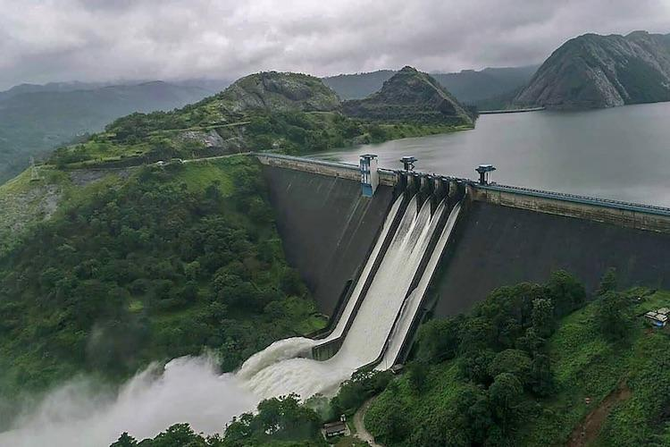

Idukki
Idukki district is a densely forested, mountainous region in the south Indian state of Kerala. In the north, Anamudi mountain towers over Eravikulam National Park, where the rare, blue Neelakurinji flower blooms every 12 years. Nearby, Munnar is a hill station known for its sprawling tea plantations and Tea Museum. Farther south is the vast, curved Idukki Dam and Periyar National Park, a tiger and elephant reserve.
Top Destinations

Idukki Dam
The Idukki Dam, located in Kerala, India, is a 168.91 m (554 ft) tall arch dam. The dam stands between the two mountains – Kuravanmala (839)m and Kurathimala (925)m. It was constructed and is owned by the Kerala State Electricity Board. It supports a 780 MW hydroelectric power station. It is built on the Periyar River, in the ravine between the Kuravan and Kurathi Hills in Kerala, India. At 167.68 metres, it is one of the highest arch dams in Asia and third tallest arch dam. It started generating power on 4 October 1975.[1] Technically, the dam type is a concrete double curvature parabolic, thin arc dam. This dam was constructed along with two other dams at Cheruthoni and Kulamavu.

Valara waterfalls
At a distance of 39 Kms from Munnar, the magnificent Valara Waterfalls is located between Adimali and Neriamangalam on Munnar to Kochi highway (NH49), near Cheeyappara Waterfalls. Valara features a chain of waterfalls falling from a height of about 1000 feet and provide a magnificent view. These waterfalls are surrounded by lush, dense forests that are home to a variety of animals and birds. It is one of the top waterfalls near Munnar. Though the falls are visible from highway, it demands good amount of trekking to reach the bottom of the falls. The surrounding places of the Valara Falls are good for trekking. The falls offer spectacular views in monsoon and post-monsoon seasons. This place is connected by buses running between Munnar and Kochi.
Cheruthoni Dam
Cheruthoni Dam is located 1 km west of Idukki dam. The spill way of the Idukki Reservoir is in the Cheruthoni dam. Kulamavu Dam was constructed to prevent the water escape through a rivulet called Kilivally, 30 km west to Idukki Arch Dam. It is a 100 metres tall Masonry gravity dam. Construction of this Cheruthoni Dam, Idukki Arch Dam and Kulamavu Dam created an artificial lake of 60 km2 and the water stored, is used for production of electricity at the Moolamattom Power house. The power house at Moolamattom is the biggest underground power station in India and the pressure shaft is the largest in the country. Cheruthoni is the largest and highest gravity dam in Kerala. Storage of water in Idukki Reservoir started in February, 1973. Moolamattom Power Station was Commissioned in February 1976 by Prime Minister Indira Gandhi.